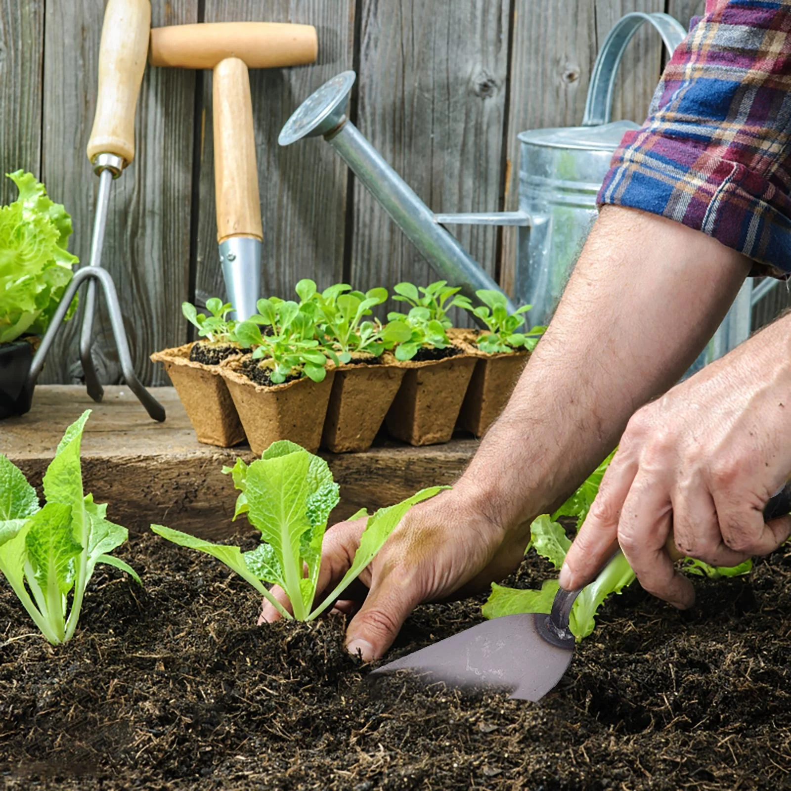

Essential Planting Tips
Learn the fundamentals of planting for success. From soil preparation to choosing the right seeds, these tips will help you get your garden off to a great start.
1. Choose the Right Seeds
Select seeds that are suitable for your climate and growing conditions. Consider factors such as temperature, sunlight, and soil type. Research each plant to understand its specific needs and growth requirements.
2. Prepare the Soil
Good soil preparation is key to a successful garden. Ensure your soil is well-drained and rich in nutrients. Use compost or organic matter to improve soil structure and fertility. Test the soil pH and adjust as necessary.
3. Plant at the Right Depth
Follow the planting depth guidelines on the seed packet. Planting seeds too deep or too shallow can affect germination and growth. Ensure the seeds are planted at the correct depth for optimal results.
4. Water Properly
Consistent moisture is crucial for seed germination and seedling growth. Water the seeds gently to avoid disturbing them. Use a watering can or gentle spray to keep the soil evenly moist, but avoid waterlogging.
5. Provide Adequate Light
Most seeds require ample light to germinate and grow. Place seed trays or pots in a bright location with indirect sunlight or use grow lights if natural light is insufficient.
6. Thin Seedlings
Once seedlings have developed their first set of true leaves, thin them out to prevent overcrowding. This allows the remaining plants to have adequate space and resources to grow healthy and strong.